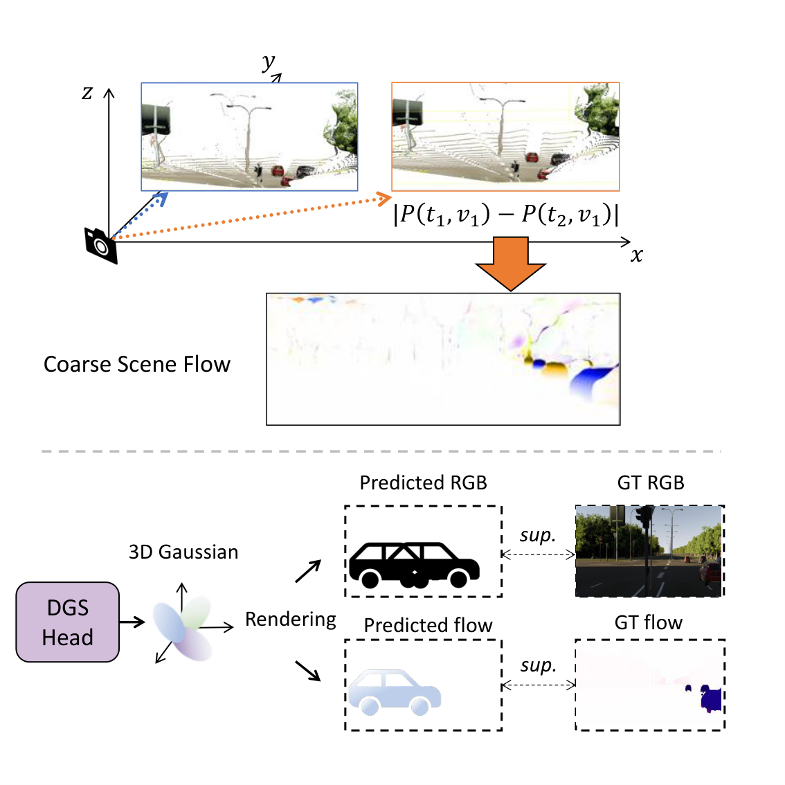
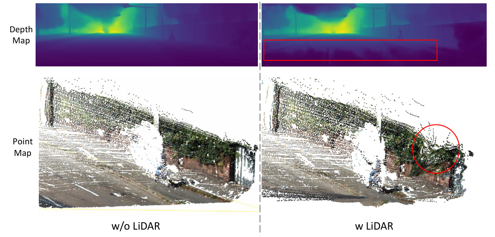
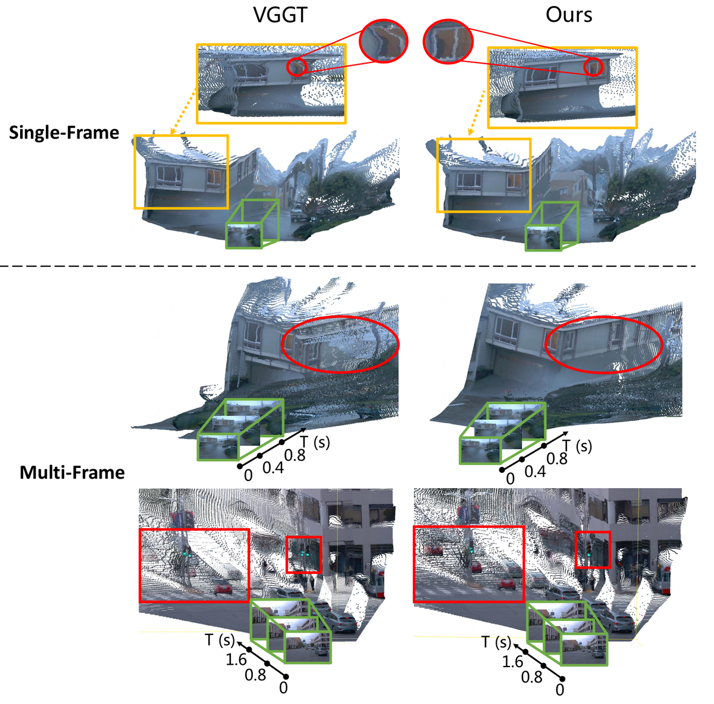
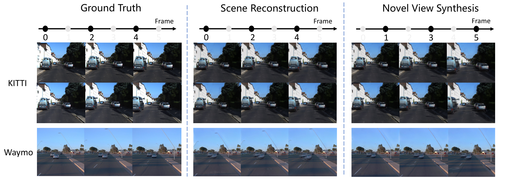

DynamicVGGT
简单摘要
这篇工作要解决的问题是：由于显着的时间变化、移动物体和复杂的场景动态，自动驾驶中的动态场景重建仍然是一个基本挑战。
对应的核心做法是：现有的前馈 3D 模型在静态重建方面表现出了强大的性能，但在捕捉动态运动方面仍然存在困难。
从机制上看，关键设计在于：为了解决这些限制，我们提出了 DynamicVGGT，这是一个统一的前馈框架，它将 VGGT 从静态 3D 感知扩展到动态 4D 重建。
训练或推理层面的重点是：我们的目标是以动态且时间连贯的方式对前馈 3D 模型中的点运动进行建模。
实验层面的主要信号是：为此，我们在共享参考坐标系内联合预测当前和未来的点图，允许模型通过时间对应隐式学习动态点表示。


简而言之，这篇论文关注的核心是：这篇工作要解决的问题是：由于显着的时间变化、移动物体和复杂的场景动态，自动驾驶中的动态场景重建仍然是一个基本挑战。 对应的核心做法是：现有的前馈 3D 模型在静态重建方面表现出了强大的性能，但在捕捉动态运动方面仍然存在困难。 从机制上看，关键设计在于：为了解决这些限制，我们提出了 DynamicV…
这篇工作要解决的问题是：视觉几何学习是计算机视觉中的一个基本问题，是机器人和自动驾驶中各种应用的核心基础。
对应的核心做法是：近年来，前馈 3D 模型通过直接从图像输入预测点云和 3D 高斯等几何表示，在静态场景理解方面取得了显着进展。
从机制上看，关键设计在于：然而，自动驾驶场景中的视觉几何学习面临着比静态场景中更大的复杂性。
训练或推理层面的重点是：现实世界的驾驶环境本质上是动态的，具有多种移动物体、不断变化的长期时间依赖性。
实验层面的主要信号是：尽管前馈架构在静态数据集上表现出强大的性能，但当扩展到这种动态条件时，它们很难保持几何精度和时间一致性。
核心创新
综合引言与方法部分，这篇论文的核心创新可以概括为以下几方面：
1）问题定义与研究动机
这篇工作要解决的问题是：视觉几何学习是计算机视觉中的一个基本问题，是机器人和自动驾驶中各种应用的核心基础。
对应的核心做法是：近年来，前馈 3D 模型通过直接从图像输入预测点云和 3D 高斯等几何表示，在静态场景理解方面取得了显着进展。
从机制上看，关键设计在于：然而，自动驾驶场景中的视觉几何学习面临着比静态场景中更大的复杂性。
训练或推理层面的重点是：现实世界的驾驶环境本质上是动态的，具有多种移动物体、不断变化的长期时间依赖性。
实验层面的主要信号是：尽管前馈架构在静态数据集上表现出强大的性能，但当扩展到这种动态条件时，它们很难保持几何精度和时间一致性。
2）方法框架与核心模块
这篇工作要解决的问题是：我们的框架建立在 VGGT 之上，并将其从静态 3D 感知扩展到动态 4D 重建。
对应的核心做法是：关键思想是建立统一的几何表示，即DPM，作为时间建模的核心。
从机制上看，关键设计在于：基于这个公式，我们通过 MTA 模块引入时间推理，通过未来点头 (FPH) 预测未来几何，并通过 DGSHead 进一步细化动态几何。
训练或推理层面的重点是：所提出的架构的概述如图 1 所示。
实验层面的主要信号是：动态点图和任务制定我们用 表示摄像机索引，用 表示帧索引。
3）实验设计与工程价值
这篇工作要解决的问题是：本节将我们的方法与跨多个任务的最先进方法进行比较，以显示其有效性。
对应的核心做法是：DynamicVGGT从预训练的VGGT权重初始化，大约800M参数（不包括冻结模块）分两个阶段进行微调。
从机制上看，关键设计在于：第一个 0.5 epoch 的线性预热，然后是余弦衰减，峰值学习率为。
训练或推理层面的重点是：在第 2 阶段，我们在启用高斯头的情况下进一步微调模型 50 个时期，使用相同的时间表但更高的峰值学习率。
实验层面的主要信号是：所有输入帧、深度图和点图都会调整大小，以便较长的图像边不超过 518 像素。
技术细节
下面按照论文的方法章节结构展开，重点说明模型的关键模块、公式设计和训练策略。
这篇工作要解决的问题是：我们的框架建立在 VGGT 之上，并将其从静态 3D 感知扩展到动态 4D 重建。
对应的核心做法是：关键思想是建立统一的几何表示，即DPM，作为时间建模的核心。
从机制上看，关键设计在于：基于这个公式，我们通过 MTA 模块引入时间推理，通过未来点头 (FPH) 预测未来几何，并通过 DGSHead 进一步细化动态几何。
训练或推理层面的重点是：所提出的架构的概述如图 1 所示。
实验层面的主要信号是：动态点图和任务制定我们用 表示摄像机索引，用 表示帧索引。
$$ P_{v,t} = \pi^{-1}(I_{v,t}; K_{v,t}, E_{v,t}) \in \mathbb{R}^{3 \times H \times W}. $$
这条公式用于定义模型中的核心计算关系：左侧给出目标量，右侧由输入与参数共同决定。阅读时可先关注 v、t、R、H 的物理/几何含义，再看它们如何影响训练目标或渲染结果。
$$ P_{v,t}^{(\mathrm{ref})} = \mathcal{T}_{(v,t)\rightarrow \mathrm{ref}} \big(\pi^{-1}(I_{v,t};K_{v,t},E_{v,t})\big), $$
这条公式用于定义模型中的核心计算关系：左侧给出目标量，右侧由输入与参数共同决定。阅读时可先关注 v、t、T 的物理/几何含义，再看它们如何影响训练目标或渲染结果。
$$ \Delta P_{v,t}^{(\mathrm{ref})} = P_{v,t+\delta}^{(\mathrm{ref})}-P_{v,t}^{(\mathrm{ref})}. $$
这条公式用于定义模型中的核心计算关系：左侧给出目标量，右侧由输入与参数共同决定。阅读时可先关注 v、t 的物理/几何含义，再看它们如何影响训练目标或渲染结果。
$$ \hat{P}_{v,t},\hat{P}_{v,t+\delta}= f_\theta(\{I_{v,t}\})|_{(v,t),(v,t+\delta)}, $$
这条公式用于定义模型中的核心计算关系：左侧给出目标量，右侧由输入与参数共同决定。阅读时可先关注 P、v、t 的物理/几何含义，再看它们如何影响训练目标或渲染结果。
$$ F_{m,v,t}^{(l)} = \begin{cases} \mathrm{Concat}\!\left(M_{v,t}^{(l)},\, F_{v,t}^{p(l)}\right), & l = 1,\\ \mathrm{Concat}\!\left(M_{v,t}^{(l)},\, F_{v,t}^{p(l)} + F_{v,t}^{p(l-1)}\right), & l > 1, \end{cases} $$
这条公式用于定义模型中的核心计算关系：左侧给出目标量，右侧由输入与参数共同决定。阅读时可先关注 m、v、t、l 的物理/几何含义，再看它们如何影响训练目标或渲染结果。
$$ A_{t,t'}^{(l)} = \mathrm{Softmax}\!\left( \frac{Q_{t}^{\mathrm{attn},(l)} \left(K_{t'}^{\mathrm{attn},(l)}\right)^\top}{\sqrt{d}} + B_{t,t'}^{\mathrm{time}} \right), $$
这条公式用于定义模型中的核心计算关系：左侧给出目标量，右侧由输入与参数共同决定。阅读时可先关注 t、l、d 的物理/几何含义，再看它们如何影响训练目标或渲染结果。



把全文方法串起来看，这篇论文的逻辑基本都遵循同一条主线：先把输入组织成更容易处理的表示，再通过模型结构和损失函数把这个表示推向目标输出，最后用可视化与数值实验共同证明该设计有效。
实验结论
实验部分主要回答两个问题：第一，方法是否真的优于已有基线；第二，这种优势来自哪一个设计决策。
这篇工作要解决的问题是：本节将我们的方法与跨多个任务的最先进方法进行比较，以显示其有效性。
对应的核心做法是：DynamicVGGT从预训练的VGGT权重初始化，大约800M参数（不包括冻结模块）分两个阶段进行微调。
从机制上看，关键设计在于：第一个 0.5 epoch 的线性预热，然后是余弦衰减，峰值学习率为。
训练或推理层面的重点是：在第 2 阶段，我们在启用高斯头的情况下进一步微调模型 50 个时期，使用相同的时间表但更高的峰值学习率。
实验层面的主要信号是：所有输入帧、深度图和点图都会调整大小，以便较长的图像边不超过 518 像素。
- 方法在核心指标上的优势与结构设计和训练目标直接相关；
- 消融实验表明，拿掉关键模块后性能与结果质量都有明显回落；
- 论文不仅比较数值，也关注可视化质量、稳定性和泛化能力等更贴近真实使用的信号。
理解评价
这篇工作要解决的问题是：我们提出了 DynamicVGGT，这是一个用于动态 4D 场景重建的统一前馈框架。
对应的核心做法是：通过将 VGGT 从静态几何感知扩展到时间动态，我们的模型通过动态点图、运动感知时间注意力、未来点头和动态 3D 高斯头共同学习几何和运动表示。
从机制上看，关键设计在于：这种设计使模型能够捕获时间依赖性，通过连续高斯优化来细化几何形状，并保持前馈效率。
训练或推理层面的重点是：实验结果表明，DynamicVGGT 在现实世界的自动驾驶数据集上提供了强大的时间一致性，同时提供了可靠的副产品，包括相机姿态估计、深度预测和新颖的视图合成。
实验层面的主要信号是：我们相信这个方向将推动前馈 4D 重建更接近自动驾驶的统一范式。
如果把它当成研究参考，建议重点关注三件事：第一，这套方法真正依赖的归纳偏置是什么；第二，实验中真正拉开差距的模块是哪一个；第三，它的局限究竟来自数据、算力还是监督信号本身。
以下相关论文可以作为进一步追踪的入口：